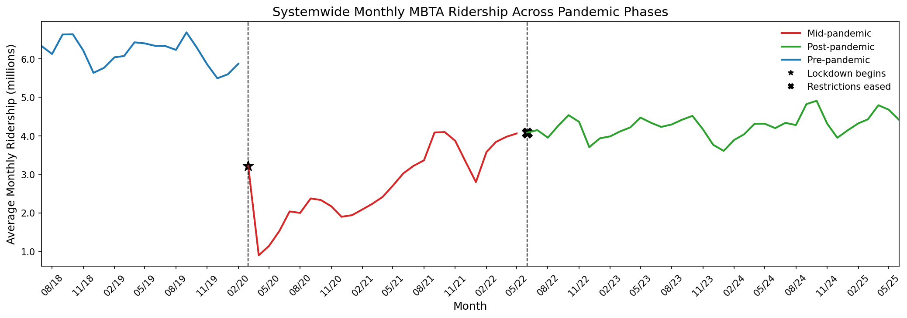

MBTA Ridership Analysis (2018–2025)
A multi-layered analysis of Boston’s transit system, exploring systemwide trends, pandemic disruptions, event-driven ridership spikes, and long-term behavioral shifts.
Project Overview
I analyzed over six years of MBTA ridership data to understand how travel patterns changed across the pandemic, how major events like Red Sox home games affect demand, and how different lines contribute to system throughput.
1. Systemwide Trends Across Pandemic Phases
This timeline splits into pre-pandemic stability, mid-pandemic collapse, and gradual recovery. Ridership fell more than 80 percent in early 2020 and now sits around 70–80 percent of pre-pandemic levels.
2. Event-Driven Demand: Red Sox Home Games
Kenmore Station ridership rises sharply with Red Sox home games. Baseball season months show increases of 20–45 percent.

3. Station-Level Demand
4. Line-Level Ridership
5. Weather and Ridership Patterns
6. Temporal Patterns: Ridership Heatmap
Technical Approach
- Processed multi-year ridership datasets
- Computed rolling trends + seasonal normalization
- Matched Red Sox schedules to station traffic
- Designed Matplotlib visuals with annotations
- Built Vega-Lite interactive dashboards
Key Insights
- Ridership dropped over 80 percent in March 2020
- Recovery plateaued at 70–80 percent of baseline
- Event-driven spikes significantly shape demand
- Red and Orange Lines carry system throughput
- Peak-hour ridership is flatter post-pandemic